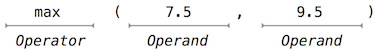
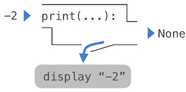

<!DOCTYPE html>
<html xmlns="http://www.w3.org/1999/xhtml" lang="sr"></html>
  <head>
    <meta charset="utf-8" />
    <meta name="viewport" content="width=device-width, initial-scale=1.0" />
<title>Елементи програмирања &#8212; Компоновање рачунарских програма</title>
    <link rel="stylesheet" href="../_static/pygments.css" type="text/css" />
    <link rel="stylesheet" href="../_static/basic.css" type="text/css" />
    <link rel="stylesheet" type="text/css" href="../_static/fitb.css" />
    <link rel="stylesheet" type="text/css" href="../_static/parsons.css" />
    <link rel="stylesheet" type="text/css" href="../_static/lib/prettify.css" />
    <link rel="stylesheet" type="text/css" href="../_static/showEval.css" />
    <link rel="stylesheet" type="text/css" href="../_static/activecode.css" />
    <link rel="stylesheet" type="text/css" href="../_static/codemirror.css" />
    <link rel="stylesheet" type="text/css" href="../_static/matrixeq.css" />
    <link rel="stylesheet" type="text/css" href="../_static/pytutor.css" />
    <link rel="stylesheet" type="text/css" href="../_static/modal-basic.css" />
    <link rel="stylesheet" type="text/css" href="../_static/datafile.css" />
    <link rel="stylesheet" type="text/css" href="../_static/webgldemo.css" />
    <link rel="stylesheet" type="text/css" href="../_static/webglinteractive.css" />
    <link rel="stylesheet" type="text/css" href="https://stackpath.bootstrapcdn.com/bootstrap/4.2.1/css/bootstrap.min.css" />
    <link rel="stylesheet" type="text/css" href="../_static/video.css" />
    <link rel="stylesheet" type="text/css" href="../_static/dragndrop.css" />
    <link rel="stylesheet" type="text/css" href="../_static/poll.css" />
    <link rel="stylesheet" type="text/css" href="../_static/clickable.css" />
    <link rel="stylesheet" type="text/css" href="../_static/tabbedstuff.css" />
    <link rel="stylesheet" type="text/css" href="../_static/karel.css" />
    <link rel="stylesheet" type="text/css" href="../_static/notes.css" />
    <link rel="stylesheet" type="text/css" href="../_static/simanim.css" />
    <link rel="stylesheet" type="text/css" href="../_static/pycode.css" />
    <link rel="stylesheet" type="text/css" href="../_static/p5js.css" />
    <link rel="stylesheet" type="text/css" href="../_static/gallery.css" />
    <link rel="stylesheet" type="text/css" href="../_static/dbDirective.css" />
    <link rel="stylesheet" href="../_static/user-highlights.css" type="text/css" />
    <link rel="stylesheet" href="https://use.fontawesome.com/releases/v5.1.1/css/all.css" type="text/css" />
    <link rel="stylesheet" href="../_static/bootstrap-4.0.0-dist/css/bootstrap.min.css" type="text/css" />
    <link rel="stylesheet" href="../_static/flatly.min.css" type="text/css" />
    <link rel="stylesheet" href="../_static/petlja-runestone.css" type="text/css" />
    <link rel="stylesheet" href="../_staticnbstyle.css" type="text/css" />
    <script id="documentation_options" data-url_root="../" src="../_static/documentation_options.js"></script>
    <script type="text/javascript" src="../_static/runestonebase.js"></script>
    <script type="text/javascript" src="../_static/skulpt-stdlib.js"></script>
    <script type="text/javascript" src="../_static/skulpt.min.js"></script>
    <script type="text/javascript" src="../_static/jquery.js"></script>
    <script type="text/javascript" src="../_static/underscore.js"></script>
    <script type="text/javascript" src="../_static/doctools.js"></script>
    <script type="text/javascript" src="../_static/language_data.js"></script>
    <script type="text/javascript" src="../_static/fitb.js"></script>
    <script type="text/javascript" src="../_static/timedfitb.js"></script>
    <script type="text/javascript" src="../_static/jquery_i18n/CLDRPluralRuleParser.js"></script>
    <script type="text/javascript" src="../_static/jquery_i18n/jquery.i18n.js"></script>
    <script type="text/javascript" src="../_static/jquery_i18n/jquery.i18n.messagestore.js"></script>
    <script type="text/javascript" src="../_static/jquery_i18n/jquery.i18n.fallbacks.js"></script>
    <script type="text/javascript" src="../_static/jquery_i18n/jquery.i18n.language.js"></script>
    <script type="text/javascript" src="../_static/jquery_i18n/jquery.i18n.parser.js"></script>
    <script type="text/javascript" src="../_static/jquery_i18n/jquery.i18n.emitter.js"></script>
    <script type="text/javascript" src="../_static/jquery_i18n/jquery.i18n.emitter.bidi.js"></script>
    <script type="text/javascript" src="../_static/fitb-i18n.en.js"></script>
    <script type="text/javascript" src="../_static/fitb-i18n.sr.js"></script>
    <script type="text/javascript" src="../_static/lib/prettify.js"></script>
    <script type="text/javascript" src="../_static/lib/hammer.min.js"></script>
    <script type="text/javascript" src="../_static/parsons.js"></script>
    <script type="text/javascript" src="../_static/parsons-i18n.en.js"></script>
    <script type="text/javascript" src="../_static/parsons-i18n.sr.js"></script>
    <script type="text/javascript" src="../_static/timedparsons.js"></script>
    <script type="text/javascript" src="../_static/showEval.js"></script>
    <script type="text/javascript" src="../_static/jquery.highlight.js"></script>
    <script type="text/javascript" src="../_static/bookfuncs.js"></script>
    <script type="text/javascript" src="../_static/codemirror.js"></script>
    <script type="text/javascript" src="../_static/xml.js"></script>
    <script type="text/javascript" src="../_static/css.js"></script>
    <script type="text/javascript" src="../_static/python.js"></script>
    <script type="text/javascript" src="../_static/htmlmixed.js"></script>
    <script type="text/javascript" src="../_static/javascript.js"></script>
    <script type="text/javascript" src="../_static/activecode-i18n.en.js"></script>
    <script type="text/javascript" src="../_static/activecode-i18n.sr.js"></script>
    <script type="text/javascript" src="../_static/activecode.js"></script>
    <script type="text/javascript" src="../_static/clike.js"></script>
    <script type="text/javascript" src="../_static/timed_activecode.js"></script>
    <script type="text/javascript" src="../_static/matrixeq.js"></script>
    <script type="text/javascript" src="../_static/reveal.js"></script>
    <script type="text/javascript" src="../_static/d3.v2.min.js"></script>
    <script type="text/javascript" src="../_static/jquery.ba-bbq.min.js"></script>
    <script type="text/javascript" src="../_static/jquery.jsPlumb-1.3.10-all-min.js"></script>
    <script type="text/javascript" src="../_static/pytutor.js"></script>
    <script type="text/javascript" src="../_static/codelens.js"></script>
    <script type="text/javascript" src="../_static/skulpt.min.js"></script>
    <script type="text/javascript" src="../_static/skulpt-stdlib.js"></script>
    <script type="text/javascript" src="../_static/datafile.js"></script>
    <script type="text/javascript" src="../_static/shortanswer.js"></script>
    <script type="text/javascript" src="../_static/timed_shortanswer.js"></script>
    <script type="text/javascript" src="../_static/animationbase.js"></script>
    <script type="text/javascript" src="../_static/webglinteractive.js"></script>
    <script type="text/javascript" src="../_static/FileSaver.min.js"></script>
    <script type="text/javascript" src="../_static/Blob.js"></script>
    <script type="text/javascript" src="../_static/runestonevideo.js"></script>
    <script type="text/javascript" src="../_static/dragndrop.js"></script>
    <script type="text/javascript" src="../_static/timeddnd.js"></script>
    <script type="text/javascript" src="../_static/dragndrop-i18n.en.js"></script>
    <script type="text/javascript" src="../_static/dragndrop-i18n.sr.js"></script>
    <script type="text/javascript" src="../_static/mchoice.js"></script>
    <script type="text/javascript" src="../_static/timedmc.js"></script>
    <script type="text/javascript" src="../_static/timed.js"></script>
    <script type="text/javascript" src="../_static/mchoice-i18n.en.js"></script>
    <script type="text/javascript" src="../_static/mchoice-i18n.sr.js"></script>
    <script type="text/javascript" src="../_static/poll.js"></script>
    <script type="text/javascript" src="../_static/clickable.js"></script>
    <script type="text/javascript" src="../_static/timedclickable.js"></script>
    <script type="text/javascript" src="../_static/tabbedstuff.js"></script>
    <script type="text/javascript" src="../_static/karelCorner.js"></script>
    <script type="text/javascript" src="../_static/karelRobot.js"></script>
    <script type="text/javascript" src="../_static/karelWorld.js"></script>
    <script type="text/javascript" src="../_static/karelRobotDrawer.js"></script>
    <script type="text/javascript" src="../_static/karelUI.js"></script>
    <script type="text/javascript" src="../_static/karel.js"></script>
    <script type="text/javascript" src="../_static/karel-i18n.en.js"></script>
    <script type="text/javascript" src="../_static/notes.js"></script>
    <script type="text/javascript" src="../_static/pygamelib-init.js"></script>
    <script type="text/javascript" src="../_static/blockly/blockly_compressed.js"></script>
    <script type="text/javascript" src="../_static/blockly/blocks_compressed.js"></script>
    <script type="text/javascript" src="../_static/blockly/python_compressed.js"></script>
    <script type="text/javascript" src="../_static/blockly/msg-sr.js"></script>
    <script type="text/javascript" src="../_static/blockpy/utilities.js"></script>
    <script type="text/javascript" src="../_static/blockpy/python_errors.js"></script>
    <script type="text/javascript" src="../_static/blockpy/ast_node_visitor.js"></script>
    <script type="text/javascript" src="../_static/blockpy/abstract_interpreter.js"></script>
    <script type="text/javascript" src="../_static/blockpy/pytifa.js"></script>
    <script type="text/javascript" src="../_static/blockpy/abstract_interpreter_definitions.js"></script>
    <script type="text/javascript" src="../_static/blockpy/python_to_blockly.js"></script>
    <script type="text/javascript" src="../_static/blockpy/imported.js"></script>
    <script type="text/javascript" src="../_static/blockpy/blocks/class.js"></script>
    <script type="text/javascript" src="../_static/blockpy/blocks/comment.js"></script>
    <script type="text/javascript" src="../_static/blockpy/blocks/comprehensions.js"></script>
    <script type="text/javascript" src="../_static/blockpy/blocks/dict.js"></script>
    <script type="text/javascript" src="../_static/blockpy/blocks/if.js"></script>
    <script type="text/javascript" src="../_static/blockpy/blocks/io.js"></script>
    <script type="text/javascript" src="../_static/blockpy/blocks/lists.js"></script>
    <script type="text/javascript" src="../_static/blockpy/blocks/sets.js"></script>
    <script type="text/javascript" src="../_static/blockpy/blocks/loops.js"></script>
    <script type="text/javascript" src="../_static/blockpy/blocks/parking.js"></script>
    <script type="text/javascript" src="../_static/blockpy/blocks/tuple.js"></script>
    <script type="text/javascript" src="../_static/blockpy/blocks/turtles.js"></script>
    <script type="text/javascript" src="../_static/blockpy/blocks/text.js"></script>
    <script type="text/javascript" src="../_static/blockpy-modal.js"></script>
    <script type="text/javascript" src="../_static/simanim.js"></script>
    <script type="text/javascript" src="https://cdn.jsdelivr.net/pyodide/v0.16.1/full/pyodide.js"></script>
    <script type="text/javascript" src="../_static/pycode.js"></script>
    <script type="text/javascript" src="//toolness.github.io/p5.js-widget/p5-widget.js"></script>
    <script type="text/javascript" src="../_static/p5js.js"></script>
    <script type="text/javascript" src="../_static/gallery.js"></script>
    <script type="text/javascript" src="../_static/dbDirective.js"></script>
    <script type="text/javascript" src="../_static/sql.js"></script>
    <script type="text/javascript" src="../_static/copybutton.js"></script>
    <script type="text/javascript" src="../_static/translations.js"></script>
    <script async="async" type="text/javascript" src="https://cdnjs.cloudflare.com/ajax/libs/mathjax/2.7.5/latest.js?config=TeX-AMS-MML_HTMLorMML"></script>
    <script type="text/javascript" src="../_static/mchoice-i18n.sr-Cyrl.js"></script>
    <script type="text/javascript" src="../_static/mchoice-i18n.sr.js"></script>
    <script type="text/javascript" src="../_static/mchoice-i18n.sr-Latn.js"></script>
    <script type="text/javascript" src="../_static/dragndrop-i18n.sr-Cyrl.js"></script>
    <script type="text/javascript" src="../_static/dragndrop-i18n.sr.js"></script>
    <script type="text/javascript" src="../_static/dragndrop-i18n.sr-Latn.js"></script>
    <script type="text/javascript" src="../_static/fitb-i18n.sr-Cyrl.js"></script>
    <script type="text/javascript" src="../_static/fitb-i18n.sr.js"></script>
    <script type="text/javascript" src="../_static/fitb-i18n.sr-Latn.js"></script>
    <script type="text/javascript" src="../_static/parsons-i18n.sr-Cyrl.js"></script>
    <script type="text/javascript" src="../_static/parsons-i18n.sr.js"></script>
    <script type="text/javascript" src="../_static/parsons-i18n.sr-Latn.js"></script>
    <script type="text/javascript" src="../_static/activecode-i18n.sr-Cyrl.js"></script>
    <script type="text/javascript" src="../_static/activecode-i18n.sr.js"></script>
    <script type="text/javascript" src="../_static/activecode-i18n.sr-Latn.js"></script>
    <script type="text/javascript" src="../_static/jquery-ui-1.10.3.custom.min.js"></script>
    <script type="text/javascript" src="../_static/jquery-fix.js"></script>
    <script type="text/javascript" src="../_static/bootstrap-4.0.0-dist/js/bootstrap.min.js"></script>
    <script type="text/javascript" src="../_static/bootstrap-4.0.0-dist/js/bootstrap.bundle.min.js"></script>
    <script type="text/javascript" src="../_static/bootstrap-sphinx.js"></script>
    <script type="text/javascript" src="../_static/waypoints.min.js"></script>
    <script type="text/javascript" src="../_static/rangy-core.js"></script>
    <script type="text/javascript" src="../_static/rangy-textrange.js"></script>
    <script type="text/javascript" src="../_static/rangy-cssclassapplier.js"></script>
    <script type="text/javascript" src="../_static/user-highlights.js"></script>
    <script type="text/javascript" src="../_static/jquery.idle-timer.js"></script>
    <script type="text/javascript" src="../_static/processing-1.4.1.min.js"></script>
    <script type="text/javascript" src="../_static/jquery.hotkey.js"></script>
    <script type="text/javascript" src="../_static/jquery-migrate-1.2.1.min.js"></script>
    <script type="text/javascript" src="../_static/require.js"></script>
    <link rel="index" title="Index" href="../genindex.html" />
    <link rel="search" title="Search" href="../search.html" />
    <link rel="next" title="Дефинисање нових функција" href="3-дефинисање-нових-функција.html" />
    <link rel="prev" title="Почетак" href="1-почетак.html" />
<meta charset='utf-8'>
<meta http-equiv='X-UA-Compatible' content='IE=edge,chrome=1'>
<meta content='width=device-width, initial-scale=1.0, maximum-scale=1.0, user-scalable=0' name='viewport' />
<link rel="shortcut icon" href="../_static/favicon.ico" type="image/ico" />

<script type="text/javascript">
  eBookConfig = {};
  eBookConfig.host = 'http://127.0.0.1:8000' ? 'http://127.0.0.1:8000' : 'http://127.0.0.1:8000';
  eBookConfig.app = eBookConfig.host + '/runestone';
  eBookConfig.ajaxURL = eBookConfig.app + '/ajax/';
  eBookConfig.course = 'krp';
  eBookConfig.logLevel = '0';
  eBookConfig.loginRequired = 'false';
  eBookConfig.build_info = "";
  eBookConfig.isLoggedIn = false;
  eBookConfig.useRunestoneServices = 'false';
  eBookConfig.python3 = 'true';
  eBookConfig.basecourse = 'krp';
  eBookConfig.runestone_version = '';
  eBookConfig.imagesDir = '../_images/';
  eBookConfig.staticDir = '../_static/';
  if(typeof(Sk) != "undefined")
      Sk.imgPath = eBookConfig.imagesDir;
</script>

<div id="fb-root"></div>


  </head><body>


<!-- Begin navbar -->

<nav id="navbar" class="navbar navbar-default navbar-fixed-top" role="navigation">

  <div class="container">

    <div class="navbar-header">
      <button type="button" class="navbar-toggle collapsed" data-toggle="collapse" data-target="#bs-example-navbar-collapse-1">
        <span class="sr-only">Toggle navigation</span>
        <span class="icon-bar"></span>
        <span class="icon-bar"></span>
        <span class="icon-bar"></span>
      </button>
      
    </div>

    <div class="collapse navbar-collapse" id="bs-example-navbar-collapse-1" style="margin-top: 10px; margin-left: 25px;">
      <ul class="nav navbar-nav">
        <li class="active"><a href="../">Компоновање рачунарских програма</a></li>
      </ul>
    </div>
  </div>
</nav>


<div class="container col-md-12" id="continue-reading"></div>

<div class="container col-md-8 col-md-offset-2" id="main-content" style="margin-top: 70px;">
  
  <div class="section" id="elementsofprogramming">
<span id="id1"></span><h1>Елементи програмирања<a class="headerlink" href="#elementsofprogramming" title="Permalink to this headline">¶</a></h1>
<p>Програмски језик је више од пуког средства за наређивање рачунару да изврши задатке. Језик такође служи и као окосница у којој програмери организују своје идеје о рачунским поступцима. Програми служе да пренесу те идеје међу члановима програмерске заједнице. Према томе, програми морају првенствено бити написани на начин да буду читљиви другим људима, а само успутно буду и извршавани на уређајима.</p>
<p>Приликом описа језика, потребно је посебно обратити пажњу на начине, то јест средства које језик пружа за комбиновање и спајање једноставних идеја да би се изградиле, односно образовале сложеније идеје. Сваки моћан програмски језик поседује три таква механизма:</p>
<ul class="simple">
<li><p>примитивне изразе и наредбе који представљају најједноставније структурне елементе које језик обезбеђује,</p></li>
<li><p>средства комбиновања помоћу којих се сложени елементи граде из простијих, и</p></li>
<li><p>начине апстракције којим се сложени елементи могу именовати и користити као јединични.</p></li>
</ul>
<p>У програмирању постоје две врсте елемената: функције и подаци (иако ће ускоро бити разоткривено да и нису заиста толико различити). Неформално говорећи, подаци су ствари којима се жели манипулисати, а функције описују правила манипулисања подацима. Тако сваки моћан програмски језик треба да има могућност описа примитивних података и примитивних функција, као и да поседује неке методе комбиновања и апстраковања и једних и других, односно и функција и података.</p>
<div class="section" id="expressions">
<span id="id2"></span><h2>Изрази<a class="headerlink" href="#expressions" title="Permalink to this headline">¶</a></h2>
<p>Након експериментисања с Пајтоновим интерпретатором у претходном одељку, сада ће изнова бити започет методички развој програмског језика Пајтон елемент по елемент. Треба бити стрпљив ако примери изгледају поједностављено јер узбудљивији материјал ускоро долази.</p>
<p>Отпочећемо примитивним изразима. Једна врста примитивног израза је број. Тачније, израз који је записан састоји се из цифара које представљају број у декадном систему.</p>
<div class="highlight-default notranslate"><div class="highlight"><pre><span></span><span class="gp">&gt;&gt;&gt; </span><span class="mi">42</span>
<span class="go">42</span>
</pre></div>
</div>
<p>Изрази који представљају бројеве могу се комбиновати и спајати с математичким операторима како би се образовали сложени изрази које ће интерпретатор вредновати:</p>
<div class="highlight-default notranslate"><div class="highlight"><pre><span></span><span class="gp">&gt;&gt;&gt; </span><span class="o">-</span><span class="mi">1</span> <span class="o">-</span> <span class="o">-</span><span class="mi">1</span>
<span class="go">0</span>
<span class="gp">&gt;&gt;&gt; </span><span class="mi">1</span><span class="o">/</span><span class="mi">2</span> <span class="o">+</span> <span class="mi">1</span><span class="o">/</span><span class="mi">4</span> <span class="o">+</span> <span class="mi">1</span><span class="o">/</span><span class="mi">8</span> <span class="o">+</span> <span class="mi">1</span><span class="o">/</span><span class="mi">16</span> <span class="o">+</span> <span class="mi">1</span><span class="o">/</span><span class="mi">32</span> <span class="o">+</span> <span class="mi">1</span><span class="o">/</span><span class="mi">64</span> <span class="o">+</span> <span class="mi">1</span><span class="o">/</span><span class="mi">128</span>
<span class="go">0.9921875</span>
</pre></div>
</div>
<p>Ови математички изрази користе такозвани <em>инфиксни</em> запис у коме се <em>оператор</em> (на пример, <code class="docutils literal notranslate"><span class="pre">+</span></code>, <code class="docutils literal notranslate"><span class="pre">-</span></code>, <code class="docutils literal notranslate"><span class="pre">*</span></code> или <code class="docutils literal notranslate"><span class="pre">/</span></code>) појављује између <em>операнада</em> (бројева). Пајтон нуди много начина да се образују сложени изрази. Уместо пуког набрајања свих начина, биће постепено увођени нови облици израза заједно са језичким својствима које подржавају.</p>
</div>
<div class="section" id="callexpressions">
<span id="id3"></span><h2>Позивни изрази<a class="headerlink" href="#callexpressions" title="Permalink to this headline">¶</a></h2>
<p>Најважнија врста сложених израза јесте израз позива или такозвани <em>позивни израз</em> који примењује функцију над неким аргументима. Присећајући се математичког појма функције из алгебре знамо да је то пресликавање неког улазног аргумента у излазну вредност. На пример, функција <code class="docutils literal notranslate"><span class="pre">max</span></code> пресликава своје улазе на један излаз који представља највећу вредност међу улазима. Начин на који Пајтон изражава примену функције исти је као и у математици.</p>
<div class="highlight-default notranslate"><div class="highlight"><pre><span></span><span class="gp">&gt;&gt;&gt; </span><span class="nb">max</span><span class="p">(</span><span class="mf">7.5</span><span class="p">,</span> <span class="mf">9.5</span><span class="p">)</span>
<span class="go">9.5</span>
</pre></div>
</div>
<p>Овај позивни израз има и своје подизразе: <em>оператор</em> је израз који претходи заградама између којих се налази низ зарезом раздвојених израза који представљају <em>операнде</em>.</p>

<p>Оператор специфицира <em>функцију</em>. Када се овај позивни израз вреднује каже се да је функција <code class="docutils literal notranslate"><span class="pre">max</span></code> <em>позвана</em> са или над <em>аргументима</em> 7.5 и 9.5, и <em>враћа</em> <em>вредност</em> 9.5.</p>
<p>Редослед аргумената у позивном изразу је од значаја. На пример, функција <code class="docutils literal notranslate"><span class="pre">pow</span></code> подиже свој први аргумент на степен представљен другим аргументом.</p>
<div class="highlight-default notranslate"><div class="highlight"><pre><span></span><span class="gp">&gt;&gt;&gt; </span><span class="nb">pow</span><span class="p">(</span><span class="mi">100</span><span class="p">,</span> <span class="mi">2</span><span class="p">)</span>
<span class="go">10000</span>
<span class="gp">&gt;&gt;&gt; </span><span class="nb">pow</span><span class="p">(</span><span class="mi">2</span><span class="p">,</span> <span class="mi">100</span><span class="p">)</span>
<span class="go">1267650600228229401496703205376</span>
</pre></div>
</div>
<p>Функционални запис има три главне предности у односу на математички конвенционалну инфиксну нотацију. Прво, функције могу примати произвољан број аргумената:</p>
<div class="highlight-default notranslate"><div class="highlight"><pre><span></span><span class="gp">&gt;&gt;&gt; </span><span class="nb">max</span><span class="p">(</span><span class="mi">1</span><span class="p">,</span> <span class="o">-</span><span class="mi">2</span><span class="p">,</span> <span class="mi">3</span><span class="p">,</span> <span class="o">-</span><span class="mi">4</span><span class="p">)</span>
<span class="go">3</span>
</pre></div>
</div>
<p>Нема двосмислености пошто име функције увек претходи њеним аргументима.</p>
<p>Друго, функционална нотација се праволинијски може проширити на угнежђене изразе код којих су сами елементи сложени изрази. У угнежђеним позивним изразима, насупрот сложеним инфиксним изразима, структура угнежђивања је у потпуности одређена унутар заграда.</p>
<div class="highlight-default notranslate"><div class="highlight"><pre><span></span><span class="gp">&gt;&gt;&gt; </span><span class="nb">max</span><span class="p">(</span><span class="nb">min</span><span class="p">(</span><span class="mi">1</span><span class="p">,</span> <span class="o">-</span><span class="mi">2</span><span class="p">),</span> <span class="nb">min</span><span class="p">(</span><span class="nb">pow</span><span class="p">(</span><span class="mi">3</span><span class="p">,</span> <span class="mi">5</span><span class="p">),</span> <span class="o">-</span><span class="mi">4</span><span class="p">))</span>
<span class="go">-2</span>
</pre></div>
</div>
<p>Не постоји (принципијелно) ограничење дубине таквог угнежђивања ни свеукупне сложености израза коју Пајтонов интерпретатор може вредновати. Међутим, људи брзо постају збуњени вишеструким угнежђивањем. Важна улога програмера јесте да структуира изразе на такав начин да остану разумљиви како њему, тако и другим људима који ће можда читати његове изразе у будућности.</p>
<p>Треће, математички записи су врло разноврсни: множење се појављује између чиниоца, степеновање као експонент, дељење као разломачка црта, а квадратни корен као потпуно засебан симбол. Неке од ових записа није једноставно искуцати! Па ипак, сва ова сложеност се може ујединити кроз нотацију позивних израза. Иако Пајтон подржава уобичајене математичке операторе у инфиксној нотацији (као што су <code class="docutils literal notranslate"><span class="pre">+</span></code> и <code class="docutils literal notranslate"><span class="pre">-</span></code>), сваки оператор може бити изражен као именована функција.</p>
</div>
<div class="section" id="importinglibraryfunctions">
<span id="id4"></span><h2>Увоз библиотечких функција<a class="headerlink" href="#importinglibraryfunctions" title="Permalink to this headline">¶</a></h2>
<p>Пајтон дефинише велики број функција, укључујући и претходно поменуте операторске функције, али нису сва њихова имена подразумевано на располагању. Уместо тога, функције и друге величине су разврстане по модулима који заједно чине Пајтонову библиотеку. За употребу ових елемената неопходно их је најпре увести. Примера ради, <code class="docutils literal notranslate"><span class="pre">math</span></code> модул обезбеђује разне познате математичке функције:</p>
<div class="highlight-default notranslate"><div class="highlight"><pre><span></span><span class="gp">&gt;&gt;&gt; </span><span class="kn">from</span> <span class="nn">math</span> <span class="kn">import</span> <span class="n">sqrt</span>
<span class="gp">&gt;&gt;&gt; </span><span class="n">sqrt</span><span class="p">(</span><span class="mi">256</span><span class="p">)</span>
<span class="go">16.0</span>
</pre></div>
</div>
<p>и <code class="docutils literal notranslate"><span class="pre">operator</span></code> модул пружа приступ функцијама које одговарају инфиксним операторима:</p>
<div class="highlight-default notranslate"><div class="highlight"><pre><span></span><span class="gp">&gt;&gt;&gt; </span><span class="kn">from</span> <span class="nn">operator</span> <span class="kn">import</span> <span class="n">add</span><span class="p">,</span> <span class="n">sub</span><span class="p">,</span> <span class="n">mul</span>
<span class="gp">&gt;&gt;&gt; </span><span class="n">add</span><span class="p">(</span><span class="mi">14</span><span class="p">,</span> <span class="mi">28</span><span class="p">)</span>
<span class="go">42</span>
<span class="gp">&gt;&gt;&gt; </span><span class="n">sub</span><span class="p">(</span><span class="mi">100</span><span class="p">,</span> <span class="n">mul</span><span class="p">(</span><span class="mi">7</span><span class="p">,</span> <span class="n">add</span><span class="p">(</span><span class="mi">8</span><span class="p">,</span> <span class="mi">4</span><span class="p">)))</span>
<span class="go">16</span>
</pre></div>
</div>
<p>Наредба <code class="docutils literal notranslate"><span class="pre">import</span></code> одређује име модула (нпр. <code class="docutils literal notranslate"><span class="pre">operator</span></code> или <code class="docutils literal notranslate"><span class="pre">math</span></code>), а затим набраја имена атрибута из тог модула које треба увести (нпр. <code class="docutils literal notranslate"><span class="pre">sqrt</span></code>). Једном када се функција увезе, може бити позивана више пута.</p>
<p>Не постоји разлика између коришћења ових функцијских оператора (нпр. <code class="docutils literal notranslate"><span class="pre">add</span></code>) и симболичких оператора (нпр. <code class="docutils literal notranslate"><span class="pre">+</span></code>). Општеприхваћено је да већина програмера користи симболе и инфиксни запис да изразе једноставне аритметичке операције.</p>
<p><a class="reference external" href="http://docs.python.org/3/library">Документација Пајтон 3 библиотеке</a> даје списак функција дефинисаних у сваком модулу, као на пример <a class="reference external" href="http://docs.python.org/3/library/math.html">математички модул</a>. Међутим, ова документација писана је за програмере који већ добро познају сам језик. За сада, експериментисање и играње са функцијама рећи ће више о понашању истих него читање документације. Како се временом буде напредовало и упознавало с Пајтон програмским језиком и речником заједнице, ова документација ће постати драгоцен референтни извор.</p>
</div>
<div class="section" id="namesandtheenvironment">
<span id="id7"></span><h2>Имена и окружење<a class="headerlink" href="#namesandtheenvironment" title="Permalink to this headline">¶</a></h2>
<p>Критичан аспект програмског језика јесу начини и средства које пружа за обраћање рачунским објектима кроз коришћење имена. Уколико се вредности додели име, каже се да је то име <em>везано</em> за или на ту вредност.</p>
<p>У Пајтону, могуће је успоставити нове везе користећи се наредбом доделе која садржи име с леве стране знака <code class="docutils literal notranslate"><span class="pre">=</span></code> и вредност с десне стране:</p>
<div class="highlight-default notranslate"><div class="highlight"><pre><span></span><span class="gp">&gt;&gt;&gt; </span><span class="n">полупречник</span> <span class="o">=</span> <span class="mi">10</span>
<span class="gp">&gt;&gt;&gt; </span><span class="n">полупречник</span>
<span class="go">10</span>
<span class="gp">&gt;&gt;&gt; </span><span class="mi">2</span> <span class="o">*</span> <span class="n">полупречник</span>
<span class="go">20</span>
</pre></div>
</div>
<p>Имена се такође повезују и преко <code class="docutils literal notranslate"><span class="pre">import</span></code> наредбе.</p>
<div class="highlight-default notranslate"><div class="highlight"><pre><span></span><span class="gp">&gt;&gt;&gt; </span><span class="kn">from</span> <span class="nn">math</span> <span class="kn">import</span> <span class="n">pi</span>
<span class="gp">&gt;&gt;&gt; </span><span class="n">pi</span> <span class="o">*</span> <span class="mi">71</span> <span class="o">/</span> <span class="mi">223</span>
<span class="go">1.0002380197528042</span>
</pre></div>
</div>
<p>Знак <code class="docutils literal notranslate"><span class="pre">=</span></code> се назива оператор <em>доделе</em> у Пајтону (и у многим другим програмским језицима). Додела је најпростије средство <em>апстракције</em> које дозвољава коришћење једноставних имена којима се обраћа на резултате сложених операција, као што је <code class="docutils literal notranslate"><span class="pre">обим</span></code> или <code class="docutils literal notranslate"><span class="pre">површина</span></code> круга израчуната у наставку. Овим путем, сложени програми се граде поступно, корак по корак, спајањем рачунских објеката све веће сложености.</p>
<p>Могућност везивања имена на вредности као и потоње поновно добијање тих вредности преко имена подразумева да интерпретатор мора садржати и неку врсту меморије која прати имена, вредности, и везе. Ова меморија назива се <em>окружење</em>.</p>
<p>Имена се такође везују и на функције. Примера ради, име <code class="docutils literal notranslate"><span class="pre">max</span></code> је везано на функцију за проналажење максимума која је малочас коришћена. Функције, насупрот бројевима, је теже приказати као текст, па Пајтон уместо тога исписује идентификациони опис приликом упита да опише функцију:</p>
<div class="highlight-default notranslate"><div class="highlight"><pre><span></span><span class="gp">&gt;&gt;&gt; </span><span class="nb">max</span>
<span class="go">&lt;built-in function max&gt;</span>
</pre></div>
</div>
<p>Може се користити наредба доделе да се дају нова имена постојећим функцијама.</p>
<div class="highlight-default notranslate"><div class="highlight"><pre><span></span><span class="gp">&gt;&gt;&gt; </span><span class="n">f</span> <span class="o">=</span> <span class="nb">max</span>
<span class="gp">&gt;&gt;&gt; </span><span class="n">f</span>
<span class="go">&lt;built-in function max&gt;</span>
<span class="gp">&gt;&gt;&gt; </span><span class="n">f</span><span class="p">(</span><span class="mi">2</span><span class="p">,</span> <span class="mi">3</span><span class="p">,</span> <span class="mi">4</span><span class="p">)</span>
<span class="go">4</span>
</pre></div>
</div>
<p>Узастопне наредбе доделе могу превезати одређено име на нову вредност.</p>
<div class="highlight-default notranslate"><div class="highlight"><pre><span></span><span class="gp">&gt;&gt;&gt; </span><span class="n">f</span> <span class="o">=</span> <span class="mi">2</span>
<span class="gp">&gt;&gt;&gt; </span><span class="n">f</span>
<span class="go">2</span>
</pre></div>
</div>
<p>У Пајтону се имена често називају и <em>имена променљивих</em> или просто <em>променљиве</em> због тога што могу бити повезана на различите вредности током извршења програма. Када се име повеже на нову вредност путем доделе, више није везано ни за једну претходну вредност. Чак се и уграђена имена могу повезати на нове вредности.</p>
<div class="highlight-default notranslate"><div class="highlight"><pre><span></span><span class="gp">&gt;&gt;&gt; </span><span class="nb">max</span> <span class="o">=</span> <span class="mi">5</span>
<span class="gp">&gt;&gt;&gt; </span><span class="nb">max</span>
<span class="go">5</span>
</pre></div>
</div>
<p>Након доделе вредности 5 имену <code class="docutils literal notranslate"><span class="pre">max</span></code>, назив <code class="docutils literal notranslate"><span class="pre">max</span></code> више није повезан на функцију те ће покушај позива <code class="docutils literal notranslate"><span class="pre">max(2,</span> <span class="pre">3,</span> <span class="pre">4)</span></code> проузроковати грешку.</p>
<p>Приликом извршавања наредбе доделе Пајтон вреднује израз с десне стране знака <code class="docutils literal notranslate"><span class="pre">=</span></code> пре промене везе на име с леве стране. Стога се може позивати на име и у изразу с десне стране чак и ако је то име предвиђено за повезивање кроз наредбу доделе.</p>
<div class="highlight-default notranslate"><div class="highlight"><pre><span></span><span class="gp">&gt;&gt;&gt; </span><span class="n">x</span> <span class="o">=</span> <span class="mi">2</span>
<span class="gp">&gt;&gt;&gt; </span><span class="n">x</span> <span class="o">=</span> <span class="n">x</span> <span class="o">+</span> <span class="mi">1</span>
<span class="gp">&gt;&gt;&gt; </span><span class="n">x</span>
<span class="go">3</span>
</pre></div>
</div>
<p>Такође је могуће повезати више имена на више вредности унутар једне наредбе у којој су имена с леве стране знака <code class="docutils literal notranslate"><span class="pre">=</span></code> и изрази с десне стране знака <code class="docutils literal notranslate"><span class="pre">=</span></code> раздвојени зарезима.</p>
<div class="highlight-default notranslate"><div class="highlight"><pre><span></span><span class="gp">&gt;&gt;&gt; </span><span class="n">обим</span><span class="p">,</span> <span class="n">површина</span> <span class="o">=</span> <span class="mi">2</span> <span class="o">*</span> <span class="n">pi</span> <span class="o">*</span> <span class="n">полупречник</span><span class="p">,</span> <span class="n">pi</span> <span class="o">*</span> <span class="n">полупречник</span> <span class="o">*</span> <span class="n">полупречник</span>
<span class="gp">&gt;&gt;&gt; </span><span class="n">обим</span>
<span class="go">62.83185307179586</span>
<span class="gp">&gt;&gt;&gt; </span><span class="n">површина</span>
<span class="go">314.1592653589793</span>
</pre></div>
</div>
<p>Смена вредности једне променљиве не утиче на друга имена. Иако је променљива <code class="docutils literal notranslate"><span class="pre">површина</span></code> у наставку повезана на вредност изворно дефинисану преко назива <code class="docutils literal notranslate"><span class="pre">полупречник</span></code>, вредност везана на име <code class="docutils literal notranslate"><span class="pre">површина</span></code> није промењена. Ажурирање вредности везане на име <code class="docutils literal notranslate"><span class="pre">површина</span></code> захтева још једну наредбу доделе.</p>
<div class="highlight-default notranslate"><div class="highlight"><pre><span></span><span class="gp">&gt;&gt;&gt; </span><span class="n">полупречник</span> <span class="o">=</span> <span class="mi">11</span>
<span class="gp">&gt;&gt;&gt; </span><span class="n">површина</span>
<span class="go">314.1592653589793</span>
<span class="gp">&gt;&gt;&gt; </span><span class="n">површина</span> <span class="o">=</span> <span class="n">pi</span> <span class="o">*</span> <span class="n">полупречник</span> <span class="o">*</span> <span class="n">полупречник</span>
<span class="gp">&gt;&gt;&gt; </span><span class="n">површина</span>
<span class="go">380.1327110843649</span>
</pre></div>
</div>
<p>Код вишеструких додела, сви изрази с десне стране знака <code class="docutils literal notranslate"><span class="pre">=</span></code> бивају вредновани пре било ког повезивања имена с леве стране на те вредности. Као резултат овог правила, замена вредности повезаних на два имена може се извести у једној наредби.</p>
<div class="highlight-default notranslate"><div class="highlight"><pre><span></span><span class="gp">&gt;&gt;&gt; </span><span class="n">x</span><span class="p">,</span> <span class="n">y</span> <span class="o">=</span> <span class="mi">3</span><span class="p">,</span> <span class="mf">4.5</span>
<span class="gp">&gt;&gt;&gt; </span><span class="n">y</span><span class="p">,</span> <span class="n">x</span> <span class="o">=</span> <span class="n">x</span><span class="p">,</span> <span class="n">y</span>
<span class="gp">&gt;&gt;&gt; </span><span class="n">x</span>
<span class="go">4.5</span>
<span class="gp">&gt;&gt;&gt; </span><span class="n">y</span>
<span class="go">3</span>
</pre></div>
</div>
</div>
<div class="section" id="evaluatingnestedexpressions">
<span id="id8"></span><h2>Вредновање угнежђених израза<a class="headerlink" href="#evaluatingnestedexpressions" title="Permalink to this headline">¶</a></h2>
<p>Један од циљева овог поглавља јесте да се одговори на питања и отклоне потенцијални проблеми у процедуралном начину размишљања. Као један од репрезентативних случајева биће размотрено вредновање угнежђених позивних израза. Сам интерпретатор прати поступак.</p>
<p>Да би вредновао позивни израз, Пајтон ће урадити следеће:</p>
<ol class="arabic simple">
<li><p>Вредновати подизразе оператора и операнада, а затим</p></li>
<li><p>Применити функцију која је вредност операторског подизраза на аргументе који су вредности подизраза операнада.</p></li>
</ol>
<p>Чак и један овакав једноставан поступак илуструје неке важне ставке о процесима уопште. Први корак диктира то да би се спровео поступак вредновања позивног израза неопходно је најпре вредновати остале изразе. Према томе, поступак вредновања је природно рекурзиван, односно, као један од корака укључује неопходност да се позове на сопствена правила.</p>
<p>На пример, вредновање</p>
<div class="highlight-default notranslate"><div class="highlight"><pre><span></span><span class="gp">&gt;&gt;&gt; </span><span class="n">sub</span><span class="p">(</span><span class="nb">pow</span><span class="p">(</span><span class="mi">2</span><span class="p">,</span> <span class="n">add</span><span class="p">(</span><span class="mi">1</span><span class="p">,</span> <span class="mi">10</span><span class="p">)),</span> <span class="nb">pow</span><span class="p">(</span><span class="mi">2</span><span class="p">,</span> <span class="mi">4</span><span class="p">))</span>
<span class="go">2032</span>
</pre></div>
</div>
<p>захтева да се претходно описани поступак вредновања примени четири пута. Уколико би се нацртао сваки израз који се вреднује, могуће је графички приказати хијерархијску структуру овог поступка.</p>

<p>Ова илустрација се назива <em>стабло израза</em>. У рачунарству, стабла по правилу расту одозго према доле. Објекти у свакој тачки стабла називају се чворови и у овом конкретном случају чворови су изрази упарени са својим вредностима.</p>
<p>Вредновање корена стабла, односно целокупног израза на врху, захтева најпре вредновање грана које су заправо његови подизрази. Изрази у листовима (то јест, чворовима без грана које произилазе из њих) представљају или функције или бројеве. Унутрашњи чворови имају два дела: позивни израз на који се правило вредновања примењује, као и резултат тог израза. Гледајући на вредновање у смислу оваквог стабла, може се замислити да вредности операнада израњају нагоре полазећи од завршних, односно крајњих чворова и укрштајући се на вишим и вишим нивоима.</p>
<p>Даље, треба имати на уму да поновне примене првог корака доводе до тачке где је потребно вредновати не више позивне изразе, већ примитивне изразе као што су бројеви (нпр. <code class="docutils literal notranslate"><span class="pre">2</span></code>) и имена (нпр. <code class="docutils literal notranslate"><span class="pre">add</span></code>). Примитивни случајеви се обрађују према правилу који гласи:</p>
<ul class="simple">
<li><p>цифра се вреднује у број који означава,</p></li>
<li><p>име се вреднује у вредност придружену том имену у тренутном окружењу.</p></li>
</ul>
<p>Треба запазити важну улогу коју има окружење у одређивању значења симбола у изразима. Бесмислено је у Пајтону говорити о вредности израза као што је</p>
<div class="highlight-default notranslate"><div class="highlight"><pre><span></span><span class="gp">&gt;&gt;&gt; </span><span class="n">add</span><span class="p">(</span><span class="n">x</span><span class="p">,</span> <span class="mi">1</span><span class="p">)</span> <span class="c1"># doctest: +SKIP</span>
</pre></div>
</div>
<p>без навођења било каквих информација о окружењу које би пружиле смисао имену <code class="docutils literal notranslate"><span class="pre">x</span></code> (па чак и имену <code class="docutils literal notranslate"><span class="pre">add</span></code>). Окружења обезбеђују контекст у коме се вредновање израза одвија, а који игра важну улогу у разумевању начина на који се програми извршавају.</p>
<p>Наведени поступак вредновања није довољан да би се вредновао целокупан Пајтонов изворни код већ само позивне изразе, бројеве и имена. На пример, не обрађује наредбе доделе. Извршавање</p>
<div class="highlight-default notranslate"><div class="highlight"><pre><span></span><span class="gp">&gt;&gt;&gt; </span><span class="n">x</span> <span class="o">=</span> <span class="mi">3</span>
</pre></div>
</div>
<p>не враћа вредност нити вреднује функцију на неким аргументима пошто је уместо тога сврха доделе да повеже име на вредност. Углавном, наредбе се не вреднују него се <em>извршавају</em>. Оне не производе вредност већ чине неку промену. Свака врста израза или наредбе има свој поступак вредновања или извршавања.</p>
<p>Опаска за педантне: када се каже „цифра се вреднује у број”, мисли се заправо на то да Пајтонов интерпретатор вреднује цифру у број. Интерпретатор је тај који даје значење програмском језику. С обзиром на то да је интерпретатор постојан програм који се увек понаша доследно, може се рећи да се цифре (и изрази) саме по себи вреднују у вредности у контексту Пајтон програма.</p>
</div>
<div class="section" id="print">
<span id="thenon-pureprintfunction"></span><h2>Нечиста <code class="docutils literal notranslate"><span class="pre">print</span></code> функција<a class="headerlink" href="#print" title="Permalink to this headline">¶</a></h2>
<p>Кроз читав овај текст, биће разликоване две врсте функција, чисте и нечисте.</p>
<div class="section" id="purefunctions">
<span id="id9"></span><h3>Чисте функције<a class="headerlink" href="#purefunctions" title="Permalink to this headline">¶</a></h3>
<p>Чисте функције имају неки улаз (односно своје аргументе) и враћају неки излаз (резултат њихове примене). Уграђена функција</p>
<div class="highlight-default notranslate"><div class="highlight"><pre><span></span><span class="gp">&gt;&gt;&gt; </span><span class="nb">abs</span><span class="p">(</span><span class="o">-</span><span class="mi">2</span><span class="p">)</span>
<span class="go">2</span>
</pre></div>
</div>
<p>се може приказати као мала машина која узима улаз и производи излаз.</p>

<p>Функција <code class="docutils literal notranslate"><span class="pre">abs</span></code> је <em>чиста</em>. Чисте функције имају својство да њихова примена нема других ефеката осим враћања вредности. Штавише, чисте функције морају увек враћати исту вредност када су позване са истим аргументима.</p>
</div>
<div class="section" id="non-purepunctions">
<span id="id10"></span><h3>Нечисте функције<a class="headerlink" href="#non-purepunctions" title="Permalink to this headline">¶</a></h3>
<p>Поред тога што враћа вредност, примена нечисте функције изазива и такозване бочне ефекте који праве неке промене у стању интерпретатора или рачунара. Чест бочни ефекат јесте производња додатног излаза поред повратне вредности користећи се <code class="docutils literal notranslate"><span class="pre">print</span></code> функцијом.</p>
<div class="highlight-default notranslate"><div class="highlight"><pre><span></span><span class="gp">&gt;&gt;&gt; </span><span class="nb">print</span><span class="p">(</span><span class="mi">1</span><span class="p">,</span> <span class="mi">2</span><span class="p">,</span> <span class="mi">3</span><span class="p">)</span>
<span class="go">1 2 3</span>
</pre></div>
</div>
<p>Иако <code class="docutils literal notranslate"><span class="pre">print</span></code> и <code class="docutils literal notranslate"><span class="pre">abs</span></code> могу изгледати слично у овим примерима, ипак функционишу на суштински различите начине. Вредност коју <code class="docutils literal notranslate"><span class="pre">print</span></code> враћа је увек <code class="docutils literal notranslate"><span class="pre">None</span></code>, што је посебна Пајтон вредност која представља ништа. Интерактивни Пајтон интерпретатор не исписује аутоматски вредност <code class="docutils literal notranslate"><span class="pre">None</span></code>. У случају функције <code class="docutils literal notranslate"><span class="pre">print</span></code>, сама функција исписује излаз као бочни ефекат позива.</p>

<p>Угнежђени изрази позива <code class="docutils literal notranslate"><span class="pre">print</span></code> функције истичу њену нечисту природу.</p>
<div class="highlight-default notranslate"><div class="highlight"><pre><span></span><span class="gp">&gt;&gt;&gt; </span><span class="nb">print</span><span class="p">(</span><span class="nb">print</span><span class="p">(</span><span class="mi">1</span><span class="p">),</span> <span class="nb">print</span><span class="p">(</span><span class="mi">2</span><span class="p">))</span>
<span class="go">1</span>
<span class="go">2</span>
<span class="go">None None</span>
</pre></div>
</div>
<p>Уколико се претходни резултат на први поглед учини неочекиваним, увек се може нацртати стабло израза како би се разјаснило зашто вредновање оваквих израза производи наизглед чудне излазе.</p>
<p>Треба бити обазрив са <code class="docutils literal notranslate"><span class="pre">print</span></code> функцијом! Чињеница да <code class="docutils literal notranslate"><span class="pre">print</span></code> функцијом враћа <code class="docutils literal notranslate"><span class="pre">None</span></code> значи да никада не би требала да буде део израза у наредби доделе.</p>
<div class="highlight-default notranslate"><div class="highlight"><pre><span></span><span class="gp">&gt;&gt;&gt; </span><span class="n">два</span> <span class="o">=</span> <span class="nb">print</span><span class="p">(</span><span class="mi">2</span><span class="p">)</span>
<span class="go">2</span>
<span class="gp">&gt;&gt;&gt; </span><span class="nb">print</span><span class="p">(</span><span class="n">два</span><span class="p">)</span>
<span class="go">None</span>
</pre></div>
</div>
<p>Чисте функције су ограничене по томе што не могу да имају бочне ефекте или да мењају понашање с временом. Наметање ових ограничења доноси значајне користи. Прво, чисте функције се могу поузданије комбиновати и слагати у сложене позивне изразе. У претходном примеру нечисте функције може се видети да <code class="docutils literal notranslate"><span class="pre">print</span></code> не враћа користан резултат када се користи као израз за операнд. С друге стране, показано је да се функције као што су <code class="docutils literal notranslate"><span class="pre">max</span></code>, <code class="docutils literal notranslate"><span class="pre">pow</span></code> или  <code class="docutils literal notranslate"><span class="pre">sqrt</span></code> могу ефикасно користити у угнежђеним изразима.</p>
<p>Друго, чисте функције су обично једноставније за тестирање. Низ аргумената ће увек водити ка истим повратним вредностима које се могу поредити са очекиваним повратним вредностима. Тестирање ће бити разматрано детаљније нешто касније у овом поглављу.</p>
<p>Треће, последње поглавље приказује да су чисте функције есенцијалне у писању <em>конкурентних</em> програма у којима се вишеструки позивни изрази вреднују истовремено.</p>
<p>За разлику од тога, следеће поглавље истражује читаву плејаду нечистих функција и описује њихову употребу.</p>
<p>Из ових разлога, у наставку текућег поглавља јак акценат ће бити стављен на писање и коришћење чистих функција. Функција <code class="docutils literal notranslate"><span class="pre">print</span></code> је изузетак који је коришћен само како би били приказани међурезултати израчунавања.</p>
</div>
</div>
</div>


  
      <div class="col-md-12">
<ul class="pager">
        <li id="relations-prev" title='Previous chapter - Почетак' data-toggle="tooltip"><a href="1-почетак.html">Претходно поглавље</a></li>
    
        <li id="relations-next" title='Next chapter - Дефинисање нових функција' data-toggle="tooltip"><a href="3-дефинисање-нових-функција.html">Следеће поглавље</a></li>
</ul>

<!-- <ul class="pager"> -->
    <!-- -->
        <!-- <li id="relations-prev" title='Претходно поглавље - Почетак' data-toggle="tooltip"><a href="1-почетак.html">Претходно поглавље</a></li> -->
    <!--  -->
    <!-- -->
        <!-- <li id="relations-next" title='Следеће поглавље - Дефинисање нових функција' data-toggle="tooltip"><a href="3-дефинисање-нових-функција.html">Следеће поглавље</a></li> -->
    <!-- -->
<!-- </ul> -->

<script type="text/javascript">

  $('#relations-prev').tooltip({'placement':'right', 'selector': '', 'delay': { show: 100, hide: 50}});
  $('#relations-next').tooltip({'placement':'left', 'selector': '', 'delay': { show: 100, hide: 50}});

</script>
</div>
  
</div>
<footer class="footer col-md-12">
    <div class="container">
        <div class="text-center">
            <hr>
            <p class="text-muted">
                <span class="pull-left">&copy; 2019 Petlja (Created using  <a href="https://pypi.org/project/Sphinx/">Swinx</a>, <a href="http://runestoneinteractive.org/">RunestoneComponents</a> and <a href="https://github.com/Petlja/PetljaDoc">PetljaDoc</a>)</span>
            </p>
        </div>
    </div>
</footer>


<script type="text/javascript">
  var _gaq = _gaq || [];
  _gaq.push(['_setAccount', 'UA-32029811-1']);
  _gaq.push(['_trackPageview']);

  (function() {
    var ga = document.createElement('script'); ga.type = 'text/javascript'; ga.async = true;
    ga.src = ('https:' == document.location.protocol ? 'https://ssl' : 'http://www') + '.google-analytics.com/ga.js';
    var s = document.getElementsByTagName('script')[0]; s.parentNode.insertBefore(ga, s);
  })();
</script>


  </body>
</html>